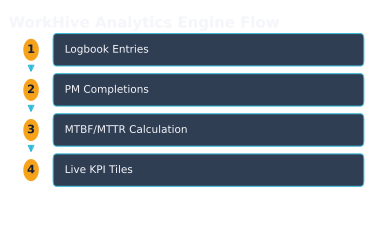
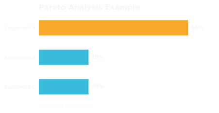

WorkHive Learn · Philippines
The 4 Phases of Maintenance Analytics: From What Happened to What To Do Next
Who this is for
- Supervisors who oversee daily plant operations
- Reliability engineers responsible for equipment performance
- Planners who schedule maintenance activities
- Plant managers who make strategic decisions
- Field workers who perform routine maintenance tasks
- Technicians who troubleshoot equipment issues
What's in this guide
Introduction to Maintenance Analytics
In the heart of Calabarzon, Philippine plants are increasingly turning to maintenance analytics to elevate their asset management game. At its core, maintenance analytics is about transforming raw data into actionable insights. This process is facilitated by WorkHive's Analytics Engine, which serves as an interconnected intelligence hub. It takes logbook entries and PM completions as inputs and computes key performance indicators such as MTBF, MTTR, Availability, OEE, PM Compliance, and Pareto analysis.
The Analytics Engine is designed to guide maintenance teams through four phases of analytics maturity: descriptive, diagnostic, predictive, and prescriptive analytics. The **Descriptive** phase provides a snapshot of what has happened, through live KPI tiles. The **Diagnostic** phase delves into why things happened, using Pareto and root-cause analysis. The **Predictive** phase forecasts what might happen, through failure risk and forecast tools. Finally, the **Prescriptive** phase recommends what to do next, via an AI-driven action plan. This structured approach ensures that maintenance teams can systematically improve their operations.
WorkHive's Analytics Engine is built with industry standards in mind, including ISO 14224 and ISA-101. It offers a zero-budget, no-CMMS rollout solution that gets richer as your logbook grows. By starting with logbook entries, plants can begin their analytics journey without significant upfront investment. The engine's outputs, such as Predictive Analytics, Asset Hub, and print-ready Analytics Reports, are all interconnected, providing a comprehensive view of maintenance performance. This holistic approach enables Philippine plants, such as those in Cabuyao or Batangas, to benchmark their performance against PH Industry Intelligence standards.
Descriptive Analytics: What Happened
As a plant supervisor in the Philippines, you need to know what happened in your facility. WorkHive's Analytics Engine provides descriptive analytics to help you understand past events. The engine computes key performance indicators (KPIs) such as Mean Time Between Failures (MTBF) and Mean Time To Repair (MTTR) from logbook entries and preventive maintenance (PM) completions. Live KPI tiles display these metrics, giving you a clear picture of your plant's performance.
The Analytics Engine also calculates other important metrics, including Availability, Overall Equipment Effectiveness (OEE), and PM Compliance. A Pareto analysis helps identify the most common causes of equipment failures. You can view these metrics for different time periods by selecting '30 days', '90 days', '180 days', or '1 year' and clicking the '🔄 Refresh' button. This allows you to track changes in your plant's performance over time.

Diagnostic Analytics: Why It Happened
In the Diagnostic phase of WorkHive Analytics, we analyze what happened and why it happened. This phase provides insights into the root causes of equipment failures and maintenance issues. For example, a 24-hour shift schedule with changing personnel at 06:00, 14:00, and 22:00 can lead to variations in maintenance quality. The Analytics Engine helps identify these patterns.
The engine provides Pareto analysis to highlight the most common causes of failures. This information is crucial for maintenance teams to prioritize tasks and allocate resources effectively. By analyzing data from logbook entries and PM completions, the engine computes key metrics such as MTBF, MTTR, and Availability. These metrics help teams understand the impact of maintenance activities on equipment performance.
| Diagnostic Analytics | WorkHive Capability |
|---|---|
| Pareto Analysis | Identifies common causes of failures |
| Root-Cause Identification | Analyzes logbook entries and PM completions |
| Failure Mode Analysis | Computes MTBF, MTTR, and Availability metrics |

Predictive Analytics: What Will Happen
The WorkHive Analytics Engine takes maintenance analytics to the next level with predictive analytics, enabling your team to anticipate and prepare for potential equipment failures. For instance, consider Pump P-204B in a Philippine plant. By analyzing historical data, the engine provides failure risk scores and forecasts, giving maintenance teams a proactive edge.
With the engine's predictive capabilities, you can assess the likelihood of equipment failure and prioritize maintenance activities accordingly. The ↑ Recompute risk button allows you to refresh risk scores and forecasts, ensuring that your team has the most up-to-date information. The engine's predictions are based on industry-recognized standards, such as ISO 14224, ensuring that your plant's maintenance practices are aligned with global best practices.
- Navigate to the Predictive tab to access failure risk scores and forecasts for your equipment.
- Use the ✅ Critical, ✊ High, ✋ Medium, and ✌ Low filters to prioritize equipment based on their risk levels.
- Click Show details to view more information on the predicted failures and plan maintenance activities.
Prescriptive Analytics: What to Do Next
Prescriptive Analytics in WorkHive's Analytics Engine takes maintenance strategy to the next level. By analyzing data from logbook entries and PM completions, the engine provides AI-driven action plans. These plans help prioritize and schedule maintenance tasks effectively. For example, a plant in Calabarzon can use prescriptive analytics to identify the most critical assets that require immediate attention.
The engine's prescriptive analytics capability is built on industry-recognized standards such as ISO 14224 and ISA-101. This ensures that the recommended actions are aligned with best practices in reliability and maintenance. By using these standards, the engine can provide actionable insights that maintenance teams can trust. The Prescriptive tab in the Analytics Engine provides a clear and concise view of the recommended actions.
Implementation and Integration
To implement and integrate WorkHive's Analytics Engine into existing plant operations, start by ensuring that your logbook entries and PM completions are up-to-date. This raw data is fed into the engine, which then computes key performance indicators such as MTBF, MTTR, Availability, OEE, PM Compliance, and Pareto. For instance, a Filipino Plant Supervisor can use the engine's Descriptive analytics to view live KPI tiles and quickly identify areas for improvement.
The Analytics Engine is designed to be interconnected, feeding predictive analytics, asset hub, and print-ready analytics reports. Click the '🔄 Refresh' button to update the data and ensure that your analytics are current. The engine also connects to PH Industry Intelligence benchmarks, providing a broader context for your plant's performance. By using these features, maintenance planners and reliability engineers can make evidence-backed choices to optimize plant operations.
With the Analytics Engine, you can move through the four phases of maintenance analytics - descriptive, diagnostic, predictive, and prescriptive - to gain a deeper understanding of your plant's performance. For example, click 'Predictive' to view risk scores and forecast potential failures. The engine's 'Prescriptive' analytics even provides an AI action plan, recommending specific actions to take next. By following these steps and utilizing the engine's features, you can improve maintenance outcomes and achieve industry-recognized standards such as ISO 14224 and SMRP.
Open the tool: Analytics is the WorkHive surface this guide funnels into. It is free at the worker tier, works offline, and is built for Philippine plants.
Open Analytics →Frequently asked questions
What is the difference between descriptive and predictive analytics?
How does WorkHive's Analytics Engine integrate with existing systems?
What is the role of ISO 14224 in maintenance analytics?
Can WorkHive's Analytics Engine be used for small-scale plants?
How does the engine handle data from different equipment types?
What kind of support does WorkHive offer for Analytics Engine users?
Sources
- ISO 14224:2016 - Reliability and maintenance data collection and analysis
- SMRP CMRP BoK - Maintenance and Reliability Body of Knowledge
- DOLE OSHS - Occupational Safety and Health Standards
- Related WorkHive guides: The print-ready analytics report · What is OEE · Predictive maintenance on a budget